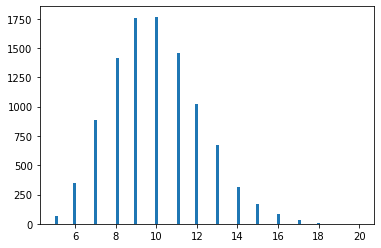

from scipy import stats
import matplotlib.pyplot as plt
import pandas as pd
%matplotlib inline
import numpy as np
c = pd.read_csv("data/cities_colombia.csv")
c['2022'] = c['2022']/c['2022'].sum()*100
c = c.head(20)
c = c.sort_values(by="name")
c
| 2022 | name | |
|---|---|---|
| 16 | 0.979496 | Armenia |
| 3 | 4.287980 | Barranquilla |
| 10 | 1.220577 | Bello |
| 0 | 23.838692 | Bogota |
| 6 | 1.776230 | Bucaramanga |
| 1 | 7.432934 | Cali |
| 4 | 2.957248 | Cartagena |
| 5 | 2.240861 | Cucuta |
| 9 | 1.309870 | Ibague |
| 19 | 0.875513 | Itaguei |
| 12 | 1.111469 | Manizales |
| 2 | 6.212485 | Medellin |
| 13 | 1.096065 | Neiva |
| 11 | 1.187330 | Pasto |
| 7 | 1.367128 | Pereira |
| 8 | 1.341231 | Santa Marta |
| 17 | 0.975200 | Soacha |
| 14 | 1.064073 | Soledad |
| 18 | 0.957469 | Valledupar |
| 15 | 0.999342 | Villavicencio |
c['2022'].sum()
32192899
xr = np.linspace(50,200,100)
plt.plot(xr, stats.beta(a=4, b=2.5).pdf( (xr-50)/150))
[<matplotlib.lines.Line2D at 0x7f3163d27220>]
#
s = stats.poisson(mu=50, loc=50).rvs(10000)
s = (pd.Series(s).value_counts()/len(s)*100).sort_index()
labels = [f"{i} msgs" for i in s.index]
vals = list(s.values)
s.plot(kind='bar')
<AxesSubplot:>
s = stats.poisson(mu=80, loc=100).rvs(10000)
s = (pd.Series(s).value_counts()/len(s)*100).sort_index()
labels = [f"{i} msgs" for i in s.index]
vals = list(s.values)
s.plot(kind='bar')
<AxesSubplot:>
hlines = np.linspace(0,100,21)[1:]
hlines = hlines[hlines<33]
hlines
array([ 5., 10., 15., 20., 25., 30.])
s = stats.poisson(mu=5, loc=5).rvs(10000)
plt.hist(s, bins=100);

s = stats.poisson(mu=5, loc=0).rvs(10000)
s = (pd.Series(s).value_counts()/len(s)*100).sort_index()
labels = list(s.index)
vals = list(s.values)
s.index
Int64Index([0, 1, 2, 3, 4, 5, 6, 7, 8, 9, 10, 11, 12, 13, 14, 15, 16, 17], dtype='int64')
labels
[0, 1, 2, 3, 4, 5, 6, 7, 8, 9, 10, 11, 12, 13, 14, 15, 16]
vals
[0.6799999999999999,
3.4099999999999997,
7.829999999999999,
14.280000000000001,
17.86,
17.26,
14.399999999999999,
10.71,
6.710000000000001,
3.51,
1.87,
0.8,
0.41000000000000003,
0.12,
0.13,
0.01,
0.01]
xr = np.linspace(0,80,100)
plt.plot(xr, stats.norm(loc=40, scale=10).pdf(xr))
[<matplotlib.lines.Line2D at 0x7f8352d661c0>]
f, xr = lambda x: np.exp(-(x+1)**2) + .8*np.exp(-5*(x-1)**2), np.linspace(-2,2, 100)
plt.plot(xr, f(xr))
[<matplotlib.lines.Line2D at 0x7f8352d52b50>]
f = lambda x: np.exp(-4*(x-1)**2) + .8*np.exp(-5*(x)**2)
plt.plot(xr, f(xr))
[<matplotlib.lines.Line2D at 0x7f8352c681c0>]
f = lambda x: np.exp(-4*(x/1.5-1)**2)
plt.plot(xr, f(xr))
[<matplotlib.lines.Line2D at 0x7f8352a73be0>]